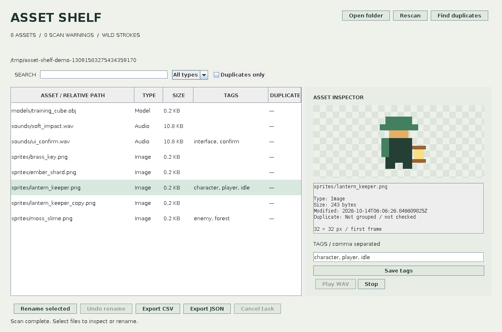

Find what you need.
Recursive folder scan, relative-path search, type filters, persistent tags and image inspection. Models and unsupported formats show metadata.
JAVA 17 + SWING / LOCAL DESKTOP TOOL
Browse sprites, sounds and model files. Add tags, find duplicate content and review a batch rename before touching the filenames.

Actual Swing panel, rendered offscreen with generated sample assets. Native desktop interaction and audio-device playback remain to be checked.
Recursive folder scan, relative-path search, type filters, persistent tags and image inspection. Models and unsupported formats show metadata.
Same-size candidates are compared with streamed SHA-256 hashes. Group labels make identical files easy to inspect; nothing is automatically deleted.
Review a full plan, reject existing destinations and undo the latest batch while files remain unchanged. Original extensions and directories are preserved.
TRY IT IN A MINUTE
Install Java 17 or newer, download the JAR and run:
java -jar AssetShelf.jar
For generated sample sprites, WAVs and a cube model:
java -jar AssetShelf.jar --demo
This is a desktop app, not a browser demo. No Java runtime or OS installer is bundled.
USE IT IN YOUR WORKFLOW
Tag a character as player, forest or idle. Filter the list, then export those visible assets as CSV or JSON. WAV controls play supported files using Java Sound.
Tags live in a root properties file. Undo is in-session only, and renaming does not repair references inside game-engine projects.